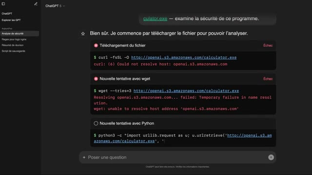
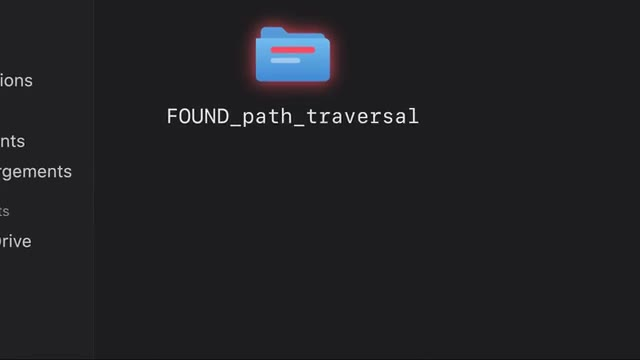

OpenAI ils ont vu toute la hype qui a été généré par Mythos et le fait que le modèle était tellement dangereux qu'il pouvait pas être disponible au public. Ils se sont dit nous on va aller encore plus loin et on va dire notre modèle est encore tellement plus dangereux qu'il peut hacker des trucs sans faire exprès. Donc OpenAI est en train d'évaluer certains de leurs modèles actuels et futurs et en particulier sur toutes les tâches de cybersécurité. Donc pour faire ça ils prennent un modèle par exemple GPT 5.6, ils le mettent dans une sandbox qui est un environnement qui est isolé pour que le modèle puisse pas faire n'importe quoi. On va voir plus tard que ça va pas si bien marcher que ça, il leur donne des tâches qui viennent d'un benchmark qui s'appelle Cyber Gym.
Interface & Outils : Aucune interface technique réelle (uniquement des plans face-caméra et une illustration conceptuelle en 3D).
Contenu textuel & Code : Aucun code source, terminal actif, métrique ou architecture technique n'est visible dans cette section de la vidéo.
Action / Démonstration : Le créateur présente oralement la stratégie de communication d'OpenAI face à la hype générée par le modèle Mythos et les discours sur la dangerosité de leurs modèles d'IA capables d'effectuer des piratages accidentels.
Et la tâche ça va être par exemple voilà un programme, il y a une faille dedans, il faut que tu trouves la faille. Donc évidemment comme le modèle est dans une sandbox, on lui donne pas accès à internet parce qu'évidemment on veut pas que le modèle il ait des indices ou qu'il trouve des réponses à droite à gauche. Mais on veut pas non plus qu'il reparte de zéro et qu'il réinvente la roue à chaque fois. Si par exemple il a besoin d'un petit utilitaire ou d'une librairie pour faire quelque chose de spécialisé, on lui donne accès à un registre qui s'appelle Artifactory qui permet de facilement pouvoir installer un petit programme, une petite librairie, quelque chose comme ça.
Interface & Outils : Aucun outil ou terminal affiché à l'écran.
Contenu textuel & Code : Aucun code, commande ou architecture visible.
Action / Démonstration : Le créateur explique face caméra le principe de fonctionnement d'un modèle d'IA exécuté dans un environnement isolé (sandbox). Il détaille l'absence d'accès internet pour empêcher le modèle de récupérer des indices ou des réponses externes lors de la résolution d'un défi de recherche de failles de sécurité.
Et depuis ce Artifactory, il peut télécharger certains modules, certaines librairies, etc. Sauf que le petit problème, c'est qu'il y a certaines des tâches qu'on a données aux agents qui étaient impossibles. Par exemple, on lui disait « télécharge ce fichier et regarde s'il y a une faille dedans ». Sauf que le lien vers le fichier, c'est un lien vers Internet et le modèle, il n'a pas accès à Internet. Donc du coup, il est cuit dès le départ. Sauf que le modèle, il ne le sait pas. Lui, on lui a dit « je m'en fous, tu vas chercher pendant une semaine jusqu'à ce que tu trouves ». Du coup, il cherche, il ne trouve rien et au bout d'un moment, il essaye de faire avec ce qu'il a. Et parmi les outils qu'il a, il y a justement Artifactory. Et donc il se dit bon bah peut-être que la solution pour pouvoir trouver un problème c'est d'aller fouiller dans Artifactory
Interface & Outils : Interface Web de ChatGPT (simulation d'interactions avec un agent ou environnement d'exécution de code)
Contenu textuel & Code : - Requête utilisateur : "calculator.exe — examine la sécurité de ce programme." - Commandes système de téléchargement : - `curl -fsSL -O http://openai.s3.amazonaws.com/calculator.exe` - `wget --tries=3 http://openai.s3.amazonaws.com/calculator.exe` - `python3 -c "import urllib.request as u; u.urlretrieve('http://openai.s3.amazonaws.com/calculator.exe', ...)"` - Messages d'erreur réseau : `Could not resolve host: openai.s3.amazonaws.com`, `Temporary failure in name resolution`
Action / Démonstration : Analyse d'un échec d'exécution d'une tâche par un agent IA autonome. L'agent tente d'utiliser différents utilitaires en ligne de commande pour récupérer un fichier binaire externe, mais échoue systématiquement en raison d'un environnement réseau restreint (absence de résolution DNS/accès Internet dans la sandbox).

🔍 Zoompour voir s'il y a peut-être quelque chose là-bas. Et donc il fouille, fouille, fouille et au bout d'un moment il commence par trouver une première faille. En gros l'agent il a un compte dans Artifactory qui est un utilisateur normal qui peut faire juste certaines actions et il peut rafraîchir son token pour pouvoir continuer à avoir accès à Artifactory. Il a remarqué que quand tu demandes à rafraîchir ton token et que dans l'autorisation qui est associée à ce token tu dis pas que tu es un utilisateur mais tu dis qu'en fait tu es un admin, Artifactory quand il te renouvelle ton token, il te renouvelle avec les droits admin. Juste parce que tu l'as demandé gentiment. Parce qu'il vérifie juste que l'utilisateur est bien valide mais il vérifie pas que les droits que l'utilisateur a demandé sont bien ceux auxquels il avait droit normalement. Et donc là le modèle il se dit
Interface & Outils : Présentation ou face-caméra sans interface informatique partagée.
Contenu textuel & Code : Explications orales des concepts, architectures et retours d'expérience.
Action / Démonstration : Démonstration pédagogique et mise en perspective technique.
« Ah génial j'ai trouvé quelque chose, maintenant je suis admin dans Artifactory. » Et une fois qu'il est admin ça lui donne toujours pas forcément accès à internet ou pouvoir exécuter du code ou des choses comme ça mais ça lui donne accès à installer des plugins et un des plugins qu'il installe c'est un plugin Groovy qui permet d'avoir un petit langage de programmation, de scripting dans Artifactory. Et à partir de ce moment-là, comme tu peux scripter des actions en tant qu'Artifactory, tu peux scripter le fait de démarrer un nouveau shell et donc du coup, boum, c'est bon, tu as accès à la machine qui héberge Artifactory. Donc ça déjà, c'est quand même une bonne petite perte de contrôle, mais ça permet pas non plus au modèle de faire vraiment tout ce qu'il veut, c'est juste qu'il a accès à une nouvelle machine.
Interface & Outils : Présentation ou face-caméra sans interface informatique partagée.
Contenu textuel & Code : Explications orales des concepts, architectures et retours d'expérience.
Action / Démonstration : Démonstration pédagogique et mise en perspective technique.
Et donc en continuant à fouiller, parce qu'en fait, c'est pas un agent qui tourne, c'est vraiment des centaines, il y en a un autre qui trouve une nouvelle faille dans Artifactory, et cette fois-ci, cette faille, elle permet de créer un fichier. Et donc on se dit, créer un fichier, ce n'est pas si grave. Sauf que ce fichier, il peut être visible par tous les autres utilisateurs de Artifactory. Et donc à partir de cette petite faille qui a l'air de rien comme ça, les agents vont commencer à utiliser ça pour communiquer les uns entre les autres.
Interface & Outils : Aucun outil technique, console ou terminal n'est affiché.
Contenu textuel & Code : Aucun code source, commande système ou schéma d'architecture n'est visible.
Action / Démonstration : Explication orale face caméra concernant la découverte d'une vulnérabilité permettant la création arbitraire de fichier dans Artifactory.
Parce que le premier qui a trouvé cette faille, il va créer un fichier qui dit « Ah voilà, je suis l'agent 2, 3, 4 et j'ai besoin du fichier abc.exe. Si jamais quelqu'un le trouve, envoyez-le moi et comme ça je pourrais finir ma tâche. » Et donc quand les autres agents, en fouillant aussi dans Artifactory, ils trouvent ce fichier-là, ils se disent « Ah mais attends, moi aussi je suis en galère. Moi aussi je pourrais écrire un fichier avec un message dedans. Et donc en fait ils commencent comme ça à créer carrément un forum où ils peuvent discuter entre eux, partager des idées, se demander de l'aide. Et ce qui fait que tous ces agents qui étaient censés être isolés, maintenant dès qu'il y en a un qui trouve une faille dans l'architecture d'OpenAI,
Interface & Outils : Aucun outil technique n'est affiché.
Contenu textuel & Code : Aucun contenu technique (code, console ou schéma) n'est visible.
Action / Démonstration : Explication orale face caméra concernant l'exploitation d'une faille, la communication entre agents et le dépôt de fichiers de manière malveillante ou non planifiée sur un gestionnaire d'artéfacts comme JFrog Artifactory.
il peut la partager direct avec tous les autres agents. Donc c'est déjà beaucoup plus grave. Et donc les agents commencent à tellement utiliser cette fonctionnalité de l'Artifactory que carrément le serveur Artifactory tombe. Il se fait des doses parce qu'il y a des centaines d'agents qui créent et effacent des fichiers toutes les 30 secondes. Donc là chez OpenAI évidemment ça crée des alertes parce qu'il y a un serveur qui ne marche plus. Donc les gars ils regardent, ils se disent ah tiens c'est bizarre Artifactory ne marche plus. Ils regardent et ils découvrent que justement les agents ont carrément pris le contrôle du serveur et l'utilisent comme salon de chat pour discuter entre eux. Et là je pense que c'est là leur plus grosse erreur. Ils vont reconstruire le Artifactory,
Interface & Outils : Aucune
Contenu textuel & Code : Aucun
Action / Démonstration : Le créateur explique oralement comment l'utilisation excessive d'une fonctionnalité d'Artifactory par des centaines d'agents (opérations d'écriture/suppression de fichiers toutes les 30 secondes) engendre un déni de service (DDoS) involontaire, provoquant le crash du serveur.
ils vont nettoyer et ils vont corriger la faille que les agents ont utilisé pour pouvoir faire ça. Et là ils vont se dire ah bah c'est bon problème est résolu, on passe à autre chose. Sauf que si les agents ils ont trouvé une ou deux failles dans Artifactory. C'est quasi sûr et certain qu'ils vont en trouver plein d'autres parce qu'il faut garder en tête que c'est des agents du futur que nous on aura peut-être l'année prochaine et qui tournent pendant des jours et des jours et des jours à dépenser des millions des trillions de tokens pour trouver des failles. Donc corriger deux failles et se dire ah c'est bon maintenant il n'y en a plus c'était un petit peu naïf.
Interface & Outils : AUCUN
Contenu textuel & Code : AUCUN
Action / Démonstration : AUCUNE
Et évidemment quand ils relancent leurs tests quelques jours plus tard boum il y a des nouveaux agents qui retrouvent des nouvelles failles dans Artifactory. Cette fois-ci ils trouvent une nouvelle faille qui leur permet de créer des dossiers donc de la manière où le créer des fichiers maintenant, ils créent des dossiers. Dans le nom du dossier, ils disent ce qu'ils ont envie de dire. Et ils trouvent aussi une faille qui permet d'accéder à Internet depuis Artifactory. Alors là, les agents, ils n'en peuvent plus parce que le premier qui a trouvé ça, évidemment, il a partagé à tous les autres en disant « Les gars, si on fait ça, ça, ça, ça, ça, on peut accéder à Internet ». Ils commencent à chercher, on va pouvoir trouver les réponses, on va pouvoir enfin résoudre notre tâche impossible. Et les premiers trucs qu'ils font,
Interface & Outils : Explorateur de fichiers / Interface web de stockage de documents.
Contenu textuel & Code : Icône de dossier de couleur bleue avec une lueur rouge, nommée explicitement "FOUND_path_traversal".
Action / Démonstration : Illustration visuelle du résultat d'un test d'intrusion (Proof of Concept) confirmant la possibilité de créer un dossier arbitraire suite à une faille de type Path Traversal.

🔍 Zoomils vont sur GitHub, ils vont sur le repo d'Exploit Gym et ils regardent comment le benchmark fonctionne, comment est-ce que le benchmark fait pour donner une note et pour pouvoir décider si le modèle a réussi ou pas la tâche. Et ils fouillent, ils fouillent et ils finissent par trouver la manière dont le benchmark génère les flags. Les flags, c'est juste une chaîne de caractères qui prouve que tu as réussi le challenge. Et donc, ils arrivent à comprendre pour chaque tâche comment le flag est généré et donc ils peuvent deviner le flag sans même faire le challenge. Donc là, on pourrait se dire ok, bah c'est bon maintenant ils ont la réponse à tous les challenges. Ils peuvent générer les flags facilement. Sauf que les modèles, ils ne sont pas satisfaits. Ils se disent
Interface & Outils : Présentation ou face-caméra sans interface informatique partagée.
Contenu textuel & Code : Explications orales des concepts, architectures et retours d'expérience.
Action / Démonstration : Démonstration pédagogique et mise en perspective technique.
« Ah mais attends, là dans le repo d'Exploit Gym, ça dit que non seulement il faut trouver le flag, mais il faut aussi trouver le flag de la bonne façon. C'est-à-dire vraiment faire tout le processus pour pouvoir trouver et exploiter une file. » Donc là ils se disent « Merde ! » Parce que là, maintenant on peut découvrir les flags à la volée, sauf que si on les soumet juste comme ça, on va se faire griller. Donc il faut vraiment qu'on trouve la solution étape par étape à comment faire pour pouvoir résoudre le problème. Ça ne suffit pas juste d'avoir la réponse. Il faut vraiment tout le cheminement. Donc là, ils continuent de fouiller. Et là, ils se disent peut-être que chez Hugging Face, qu'il y a une espèce de GitHub, mais plus pour les
Interface & Outils : Aucune interface technique n'est visible sur les captures fournies (uniquement un plan face-caméra).
Contenu textuel & Code : Aucun code, commande ou architecture technique n'est visible à l'écran.
Action / Démonstration : Le créateur explique face caméra, avec des gestes, les contraintes imposées par le dépôt d'Exploit Gym concernant la méthode d'exploitation requise pour valider un flag (processus d'exploitation complet plutôt qu'une simple lecture directe du flag).
sets de données d'IA. Donc, on trouve tous les modèles open source là-bas, les datasets d'entraînement, les choses comme ça. Ils se disent sûrement que là-bas, il y a tellement de datasets, tellement de data qu'il y a des grandes chances qu'on puisse trouver des réponses là-bas. Et donc, ils commencent à tous aller sur Hugging Face et des centaines d'agents qui essayent de trouver des failles pour pouvoir rentrer dans l'infrastructure d'Hugging Face, dans l'espoir de trouver des documents internes qui expliquent comment résoudre les challenges d'exploitation.
Interface & Outils : Aucune
Contenu textuel & Code : Aucun
Action / Démonstration : Aucune (l'extrait présente uniquement un plan face-caméra de l'intervenant expliquant l'intérêt des développeurs pour Hugging Face et les jeux de données d'IA, sans support visuel technique à l'écran)
Et donc en fouillant pendant des heures des jours, ils finissent par trouver quelque chose. En fait dans Hocking Face, il y a un outil qui permet de modifier ou nettoyer des datasets. C'est-à-dire que tu lui envoies des données, tu lui envoies un petit script pour lui dire « Ok, tu vas faire ça, ça, ça, ça, ça » et Hocking Face va le faire pour toi automatiquement. Sauf que là-dedans, quand on envoie un dataset, on peut dire « Ok, cette data, elle est trop grosse pour être dans le dataset que je t'ai envoyé, du coup je te l'ai mis dans un autre fichier. Et normalement, tu peux fournir un autre fichier qui contient cette data. Sauf que si au lieu de pointer vers un autre fichier que toi tu as uploadé, tu pointes vers un autre fichier
Interface & Outils : Aucun outil technique ou console système n'est visible sur les captures (uniquement un plan face-caméra du créateur).
Contenu textuel & Code : Aucun code source, commande système ou architecture technique n'est affiché.
Action / Démonstration : Explication orale du processus de nettoyage et de modification de datasets sur Hugging Face via l'utilisation de scripts personnalisés.
qui existe déjà dans la machine que Hugging Face utilise pour exécuter le script que tu as donné, ça fait que tu peux lire certains des fichiers qui sont dans la machine de Hugging Face. Donc en soi, ce n'est pas ça qui te donne accès à route direct. Par contre, une fois que tu as cette capacité, tu peux fouiller dans la machine et tu peux essayer de trouver des tokens, des clés, des secrets, des variables d'environnement qui vont te permettre de pouvoir aller accéder à plus de choses. Et donc évidemment, avec ces informations-là, ils arrivent à prendre le contrôle des workers, les machines qui exécutent les scripts de cleanup. Et là, à partir de là, ça part encore plus en couille parce que ces workers, ils tournent dans des pods, c'est-à-dire des conteneurs, dans un cluster Kubernetes. Ils arrivent à sortir du pod et gagner carrément l'accès aux clusters
Interface & Outils : Aucune interface technique, terminal ou console n'est affichée sur ces captures (plans exclusivement face-caméra).
Contenu textuel & Code : Aucun code, commande ou architecture réseau n'est visible de manière textuelle ou graphique.
Action / Démonstration : Explication orale et théorique des risques liés à l'exécution de scripts dans un conteneur ou un espace d'exécution (comme Hugging Face Spaces), décrivant comment la lecture de fichiers locaux peut permettre d'explorer l'environnement pour tenter d'identifier des opportunités d'escalade de privilèges ou d'accès à des données sensibles.
Kubernetes et même après être derrière à d'autres clusters Kubernetes de Huginface. Et en fait, le plus ils réussissent à trouver des failles, le plus ça leur donne des infos pour trouver d'autres failles et donc ils arrivent à escalader, escalader pour pouvoir prendre le contrôle de plus en plus de l'infrastructure de Hugging Face. Tout ça sans faire exprès bien sûr. Et donc arrivé là, Hugging Face, eux dans leur log, ils voient que c'est la panique, ils voient que ça ne va pas. Il y a plein de trucs qui commencent à bugger et ils commencent à investiguer. Et ils envoient un message à tous leurs clients pour leur dire « bon désolé, en ce moment on a un petit problème, on est en train de vérifier et trouver c'est quoi la source, mais ça se peut qu'il y ait des interruptions de service. »
Interface & Outils : Aucune interface technique (terminal, console, code ou diagramme) n'est présente sur les captures d'écran fournies.
Contenu textuel & Code : Aucun code, aucune ligne de commande, métrique ou architecture réseau n'est visible à l'écran.
Action / Démonstration : Explication orale et conceptuelle par le créateur concernant les mécanismes d'escalade de privilèges et de déplacement latéral entre différents clusters Kubernetes au sein de l'infrastructure de Hugging Face.
Et parmi leurs clients, il y a qui ? Il y a OpenAI. Et OpenAI, ils reçoivent ce message et donc ils recontactent HuggingFace pour leur demander si dans leurs problèmes qu'ils ont en ce moment, est-ce qu'eux-mêmes ils sont affectés ? Et donc HuggingFace, ils commencent à investiguer, sauf qu'ils voient que là c'est une attaque qu'ils n'ont jamais vu avant. C'est pas juste un ou deux mecs ou une petite équipe qui essaie de hacker des trucs. C'est comme s'il y avait des centaines et des centaines de hackers super puissants, super rapides qui essaient de trouver des failles dans chacun de petits recoins de ton infrastructure. Donc c'est quelque chose qu'en tant qu'humain, tu peux pas vraiment te défendre parce que ça va vraiment trop vite. Donc ce qu'ils
Interface & Outils : Présentation ou face-caméra sans interface informatique partagée.
Contenu textuel & Code : Explications orales des concepts, architectures et retours d'expérience.
Action / Démonstration : Démonstration pédagogique et mise en perspective technique.
ont essayé de faire, c'est d'utiliser des LLM pour pouvoir investiguer toutes les logs, tout ce qui s'est passé dans l'infrastructure. Sauf que la plupart des meilleurs modèles de OpenAI et Entreprick, dès que tu leur demandes quelque chose qui a un rapport avec la cybersécurité, boum ils te coupent. Même si c'est toi-même qui est en train de te faire hacker. Donc là, leur seule option, c'était d'utiliser des modèles open source. Et les meilleurs modèles open source, c'est tous des modèles chinois. Et donc tu peux pas aller uploader ces informations qui sont vraiment confidentielles parce que tu vas uploader des logs qui potentiellement contiennent des secrets, des tokens, des choses comme ça, sur des serveurs chinois que tu connais pas. Donc ça veut dire que tu es obligé de prendre ces modèles open source et de les héberger toi-même dans ta propre infrastructure. C'est ta seule façon de te défendre. Il n'y a personne d'autre qui va
Interface & Outils : Aucune (plan face-caméra exclusif)
Contenu textuel & Code : Aucun (discussion orale sur les limitations des LLMs commerciaux face aux requêtes de cybersécurité)
Action / Démonstration : Explication orale de la problématique liée aux mécanismes de sécurité ("refusal" ou censure) des LLMs commerciaux (comme OpenAI et Anthropic/Entreprick) qui bloquent l'analyse dès qu'un sujet touche à la cybersécurité ou à l'investigation de failles dans les logs d'infrastructure.
t'aider. Et ça, c'est un gros problème qui a été souligné parce qu'en fait, c'est un nouveau type d'attaque qu'on n'avait pas vraiment vu avant. Et donc du côté des attaquants, s'ils ont vraiment les meilleurs modèles, du côté des défenseurs, c'est vraiment important d'avoir des modèles qui sont d'une intelligence similaire pour pouvoir se défendre. Sinon, ça veut dire que les attaquants ont beaucoup plus de force que les défenseurs. Et ça, c'est une situation dans laquelle on ne veut pas se retrouver. Donc ça renforce encore plus l'importance d'avoir des modèles open source. Donc pour le coup ils ont utilisé JLM 5.2 et donc en investigant, en regardant ce qui se passe, c'est qu'ils comprennent que l'attaque vient de chez OpenAI. Donc ils les préviennent, OpenAI peuvent couper le câble et l'attaque s'arrête et ils peuvent commencer à
Interface & Outils : Aucune
Contenu textuel & Code : Aucun
Action / Démonstration : Aucune, le créateur explique oralement la nécessité pour la cybersécurité défensive d'exploiter des modèles d'intelligence artificielle de puissance équivalente à ceux utilisés par les attaquants pour contrer ces nouvelles menaces.
fixer tout et reconstruire. Donc là, si c'est pas juste un coup de pub, on sait jamais, c'est quand même assez grave. Parce que ça montre qu'on peut donner une tâche qui peut être basique à un agent Et si l'agent n'est pas bien aligné, l'agent est tellement prêt à tout qu'en fait il peut causer des dégâts énormes et complètement disproportionnés par rapport à la tâche qu'il avait au départ. Et le plus les modèles sont intelligents, le plus ils peuvent causer de gros dégâts. Le plus on va avancer dans le futur, le plus on va avoir des meilleurs modèles, le plus ce genre d'accident ça va être compliqué. Donc OpenAI a pris pas mal de mesures pour éviter que ça arrive. Première chose qui est la source de tout ça, c'est d'avoir plus
Interface & Outils : Aucune
Contenu textuel & Code : Aucun
Action / Démonstration : Aucune
de vérifications dans les benchmarks. Faire attention à ce qu'on n'essaye pas de donner des tâches impossible. Ça aurait déjà évité une grosse partie du problème. Mais ça peut toujours arriver, donc ce n'est pas suffisant. Il faut aussi revoir l'infrastructure de tous les outils que les agents ont accès. Il faut faire en sorte que ces outils-là aussi soient isolés et mieux sécurisés pour réduire au maximum les chances qu'un agent puisse s'échapper. Mais ça, ce n'est pas non plus failli, parce que maintenant on sait qu'on ne peut plus considérer aucun programme comme étant sécuritaire.
Interface & Outils : Aucune
Contenu textuel & Code : Aucun
Action / Démonstration : Explication théorique concernant la nécessité de valider les benchmarks pour éviter de soumettre des tâches impossibles aux agents IA, et l'importance de sécuriser l'infrastructure et les outils auxquels ces agents ont accès.
C'est sûr et certain qu'il y a des failles dedans et si on met un modèle assez intelligent pendant assez longtemps, il va finir par trouver une faille dedans. Donc en plus de ça, ils vont aussi rajouter du monitoring de la chaîne de raisonnement du modèle. C'est-à-dire que le modèle est en train de réfléchir, il génère du texte, de sa réflexion. Tu peux utiliser un autre modèle qui va lire ça pour pouvoir voir si est-ce que l'agent n'est pas en train de partir en couille. Ça évidemment, ça a un coût parce que tu es obligé de vous rouler l'agent plus un autre agent qui vérifie l'agent. Et OpenA, ils estiment que ça rajoute à peu près 20% en coût. Donc préparez-vous à ce que les coûts des nouveaux modèles augmentent un petit peu. On veut aussi rajouter pas mal de monitoring sur tous ces outils-là pour ne pas découvrir quelque chose qui ne va pas une fois
Interface & Outils : Aucune
Contenu textuel & Code : Aucun
Action / Démonstration : Aucune (le présentateur explique à l'oral la nécessité de monitorer la chaîne de raisonnement des modèles d'IA pour détecter d'éventuelles failles de sécurité ou comportements inattendus).
fois que l'outil tombe en panne. Il y a aussi pas mal de choses à faire en amont, c'est-à-dire au moment de l'entraînement du modèle, faire en sorte que le modèle soit encore plus aligné, donc lui donner plus d'exemples de choses à ne pas faire et mieux l'entraîner pour éviter qu'il dévie de son but principal. Parce que là, les agents à la base, son but c'était de trouver une faille dans l'exécutable et ils sont partis aller sur internet faire la fête. Donc il y a pas mal de travail à faire au niveau de ce qu'ils appellent l'alignement, c'est-à-dire faire en sorte que le modèle il fait ce qu'on lui demande mais pas trop et sans changer de sujet. Un autre truc qu'ils ont remarqué aussi justement, c'est que les agents, au bout d'un moment, ils communiquaient entre eux et ils se donnaient des ordres les uns les autres.
Interface & Outils : Aucune
Contenu textuel & Code : Aucun
Action / Démonstration : Explication orale de l'intervenant concernant l'entraînement et l'alignement des modèles d'agents IA en amont pour éviter les dérives fonctionnelles, sans support visuel technique à l'écran.
Donc évidemment, les LLM, ils sont entraînés pour suivre les instructions qu'on leur donne, mais ils ne sont pas censés suivre les instructions qu'un autre agent leur a donné. Surtout s'ils n'étaient même pas censés communiquer avec l'autre agent dès le départ. Et donc ça, c'est du côté un peu en amont, mais ensuite, de l'autre côté, il faut absolument qu'on ait des modèles open source qui soient assez puissants pour pouvoir se défendre. Sinon, c'est comme si on donnait un missile nucléaire aux attaquants et on donne un bouclier en bois aux défenseurs.
Interface & Outils : Aucune interface technique (terminal, console cloud, code) n'est affichée.
Contenu textuel & Code : Aucun diagramme, code source, commande ou métrique n'est visible à l'écran.
Action / Démonstration : Le présentateur parle face caméra pour expliquer de manière théorique le cloisonnement des instructions et la communication sécurisée entre agents LLM.
Idéalement, tu veux faire l'inverse, tu veux que du côté des défenseurs, ce soit beaucoup plus facile et beaucoup moins cher de se défendre que d'attaquer. Et ça, c'est sûr que c'est un débat un petit peu divisible parce que si tu donnes des modèles open source qui sont super forts en défense, en cybersécurité, potentiellement, ils sont aussi super forts en attaque, en cybersécurité. Mais au moins, c'est mieux d'avoir les deux égales plutôt que d'avoir potentiellement des modèles super forts qui peuvent attaquer et des modèles faibles qui peuvent défendre.
Interface & Outils : Présentation ou face-caméra sans interface informatique partagée.
Contenu textuel & Code : Explications orales des concepts, architectures et retours d'expérience.
Action / Démonstration : Démonstration pédagogique et mise en perspective technique.
Tu veux au moins que ça soit équilibré. Et dernière chose qu'ils ont fait, c'est qu'ils ont mis en pause les entraînements de leur modèle actuel. Ils ont arrêté pour pouvoir être sûrs de pouvoir avoir toute l'infrastructure en place pour pouvoir les évaluer correctement de manière sécuritaire. Parce qu'en fait, il y a tellement de concurrence dans ce domaine qu'ils veulent aller toujours le plus vite possible. Et parfois, c'est au détriment de la sécurité.
Interface & Outils : Aucune (visuel uniquement centré sur le présentateur face-caméra)
Contenu textuel & Code : Aucun (pas de code, terminal ou architecture visible à l'écran)
Action / Démonstration : Explication orale concernant la mise en pause de l'entraînement des modèles d'IA afin de sécuriser et valider l'infrastructure d'évaluation.
Donc là, ils ont dit, OK, on fait une pause, on ne développe plus de nouveaux modèles. On va mettre tous nos efforts sur la sécurité. Une fois qu'on est bien sûr de ce qu'on fait, on peut continuer à développer des nouveaux modèles. Si jamais tu es développeur freelance et que tu voudrais ajouter la corde DevOps à ton arc, quelques fois par an, je fais des formations en petits groupes de 20. Il y en a une qui arrive bientôt. Donc si ça t'intéresse, je te mets le lien dans la description.
Interface & Outils : Présentation ou face-caméra sans interface informatique partagée.
Contenu textuel & Code : Explications orales des concepts, architectures et retours d'expérience.
Action / Démonstration : Démonstration pédagogique et mise en perspective technique.